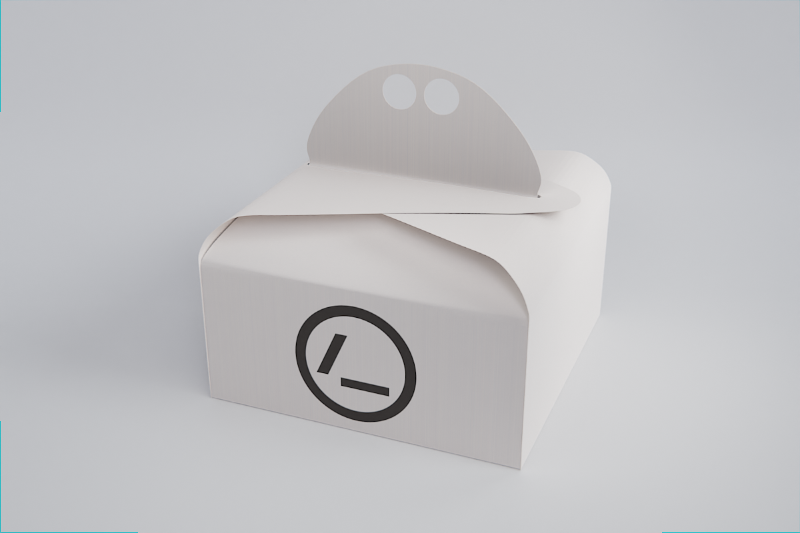
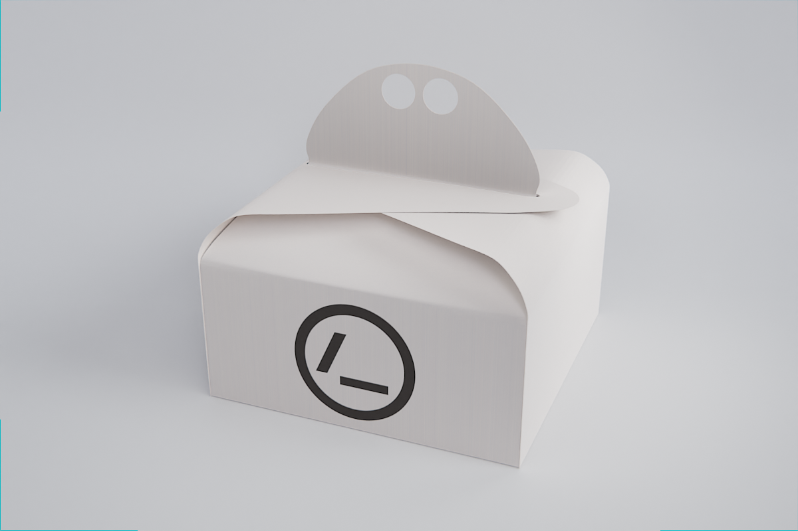
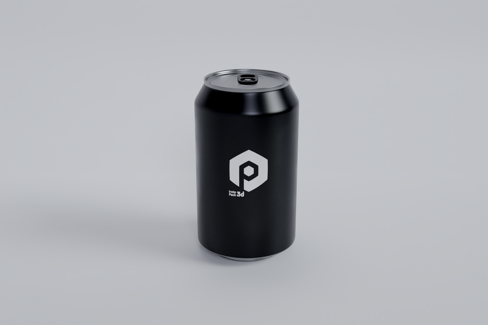
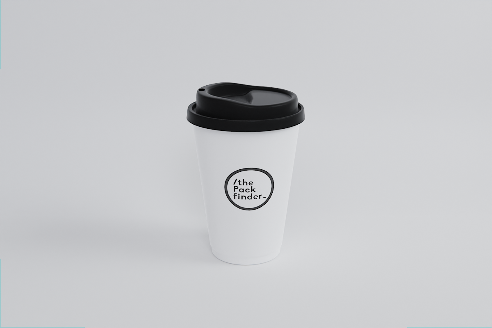
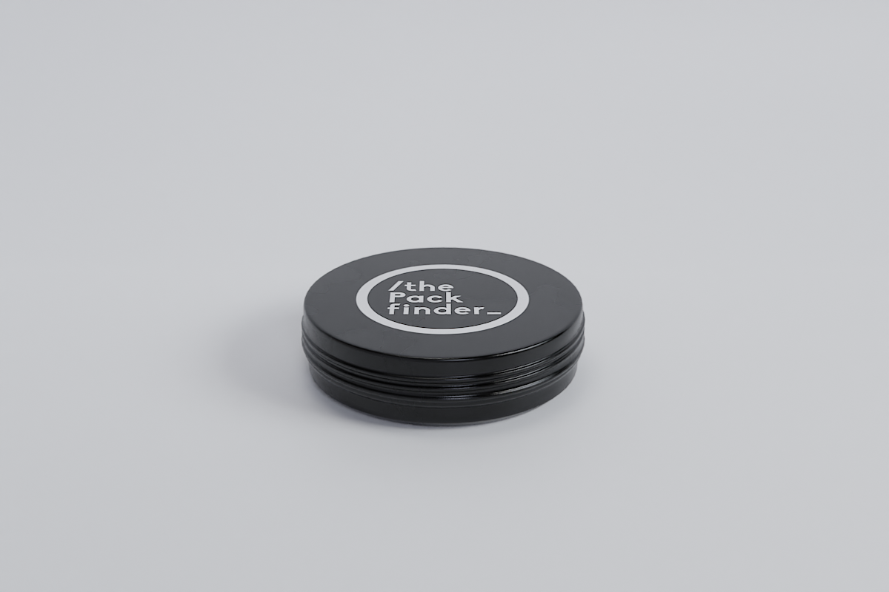
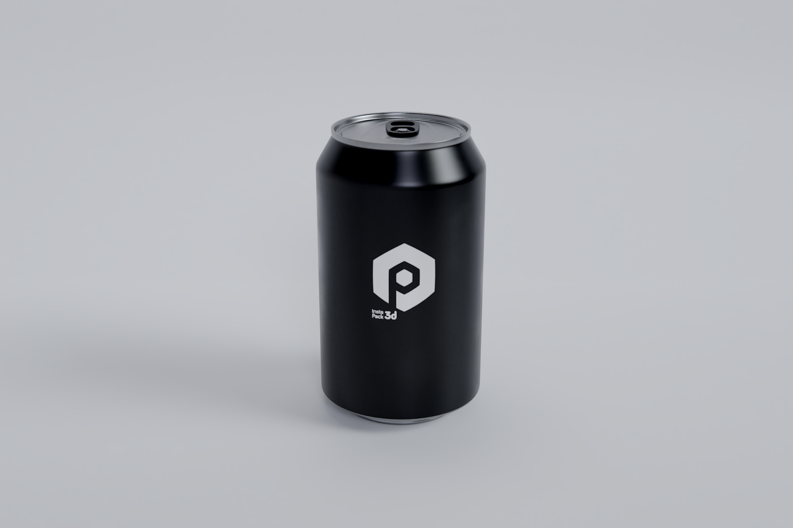
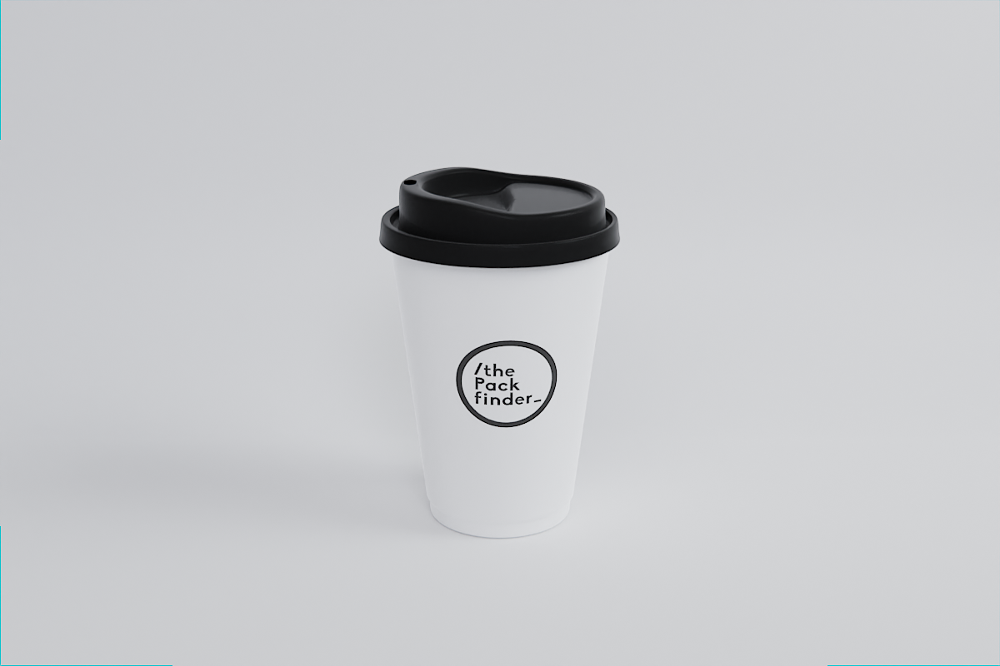
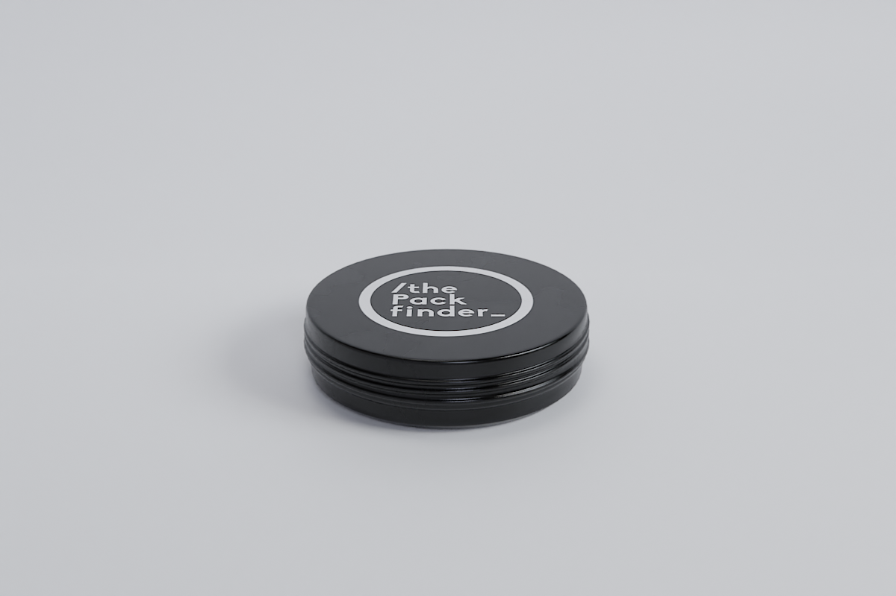
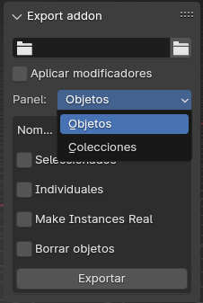
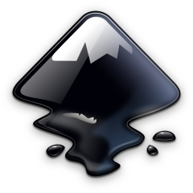

About Me
"3D modeling specialist with extensive experience in the packaging industry. Notable in hard surface modeling and developing modeling tool design methods to optimize production. Passionate about exploring new opportunities in the 3D world and committed to projects".
My name is Álvaro Pérez. Throughout my professional career, I have gone through a variety of jobs that have provided me with a multitude of details that I reflect in 3D digitization. I started in the audiovisual media, especially in photography and video, and incorporated small 3D animations from the beginning. That feeling of mastering the entire creation process fascinated me and, although it seemed difficult, I decided to dedicate myself exclusively to 3D. Without a doubt, it has been the best decision I have made; I love this job.
This led me to study the degree in Audiovisual Communication at Pompeu Fabra University, where I specialized in Interactive Media. During my studies, I developed a 3D animated short and my final project was the complete development of the game design of a video game along with the technical demo. Thanks to this, I got an internship at a company dedicated to the 3D digitization of packaging, where I was later hired for five years.
Professional Experience
I started in the packaging sector as a modeler, container by container I expanded the library and learned more about the similarities of the models that would later serve me to parameterize.
 

 







Custom Library
This expansion of the library allowed the reuse of models, reducing design time. I implemented organization systems, facilitating the search and selection of components for incorporation into new designs. I currently have a large library available that covers all sectors, with measurements and physical references that cover a high percentage of all industry containers.
Parametric Tools
Although the library has many advantages, it also presents limitations, such as the lack of control over models and individualized production. This means that for large productions, even with similar models, it is necessary to duplicate and create models one by one. To solve this limitation, I looked for a way to optimize production and discovered parametric modeling with Blender's Geometry Nodes. This tool allowed me to parameterize common containers and thus create tools to generate complete models more efficiently.
This approach transformed our production process, allowing us to generate hundreds of models, with more accuracy due to their parametric nature and lighter weight due to optimization, always replacing the manual process when possible and making it possible for other non-specialized workers to generate models. As a result, our team's efficiency and productivity increased significantly.
I also developed specific tools to facilitate traditional modeling and handle repetitive and tedious tasks, which can be used at any time. For example, an unwrap that centers the UV and adjusts it to a square shape, very useful for customization areas, and a generator of parametrized threads and counter-threads.
Export Addon
Another tool I developed to solve the mass export problem is an addon for Blender created in Python.
GLTF Export
Renders
In addition to model production, I also performed other tasks, such as renders for product thumbnails and animated renders for promotions and events. These renders, which were not a priority, were done with less time and effort, seeking effective impact without requiring great dedication. For example, these animated GIFs for mailing.
Personal Experience
As I mentioned at the beginning, my personal experience is closely linked to my professional experience. An example of this is my study of parametric modeling with Geometry Nodes, which, given its difficulty, I didn't know how to learn or how to apply in my work. Therefore, I looked for a personal project where I could apply this learning and motivate myself.
Parametric Cities
At that time, I was recreating my childhood village to scale, using Unreal Engine to be able to explore it. This led me to wonder how to generate populations en masse without having to place each model individually, and Geometry Nodes was the perfect solution. After a year of learning, I began to master it and was able to develop the principle of a procedural city generator, this time implementing it in the Godot engine. This project allowed me to explore this tool more deeply, and once I had the first idea of how to apply it in my work, new ideas continued to emerge to take advantage of Geometry Nodes in all aspects.
Assets
My interest in video game development and the 3D world, in general, keeps me always active. That's why from time to time I also dedicate myself to organic modeling, either creating characters to animate and move them in game engines or modeling assets for environments, renders, and, to a lesser extent, for printing.


Game Engines
In addition to modeling, my other passion is game engines. Not so much for the games themselves, but for the interactivity they offer. My first contact was with Unity in the demo of the TFG, but that was a long time ago and does not reflect my current knowledge. I have spent more time in Unreal without an apparent project, where through blueprints I was able to bring characters and environments to life. However, when I started working with Geometry Nodes, I discovered Godot and, like Blender, I fell in love with its potential. Currently, it is where I develop my projects. Although my programming knowledge is basic, I have been able to create all the necessary scripts with the help of ChatGPT, just as I developed the export addon and this page.
Skills
In Production
Project Evaluation and Planning: As the production manager, I evaluate the client's product to be digitized in detail. This includes determining the project's difficulty, calculating delivery dates, and planning the appropriate strategy for its execution.
Methodology Adapted to Difficulty: I analyze different ways of approaching production based on the product's complexity. I select the most effective methodology to ensure the process is optimal and meets the established deadlines.
Innovation and Scalability: I always look for new ways to improve and scale production. I implement methods and techniques that optimize efficiency and ensure that each product is done correctly.
Quality Control: I ensure that all delivered products meet the required quality standards. I conduct detailed reviews at each stage of the process to guarantee the final result meets expectations.
Production Organization and Backup: I keep production well organized and backed up periodically. This ensures that all information is always accessible and up-to-date, facilitating its use for future projects or queries.
In Modeling
Modeling: This is the area where my experience expands the most, as can already be seen.
Shaders: Just like parametric geometry, creating parametric shaders is where I focus the most. I prefer to have a library of parametric shaders instead of using traditional painting, although if I need it, I use Substance Painter, Armorpaint, or Blender itself.
Texturing: Packaging in general has many customization areas, so part of my daily work is generating various types of UV maps. For this, I have developed specific tools dedicated to this task.
Lighting and Camera: Due to my experience working with cameras and my audiovisual studies, I have extensive knowledge of lighting and framing that I apply to the 3D environment.
Rendering: Optimizing render times and adjusting renders to maximize quality in the shortest possible time is another area I have studied in depth.
Animation: Although I started doing animations, today it is the part that interests me the least.
Softwares


- 


Education

Bachelor's Degree in Audiovisual Communication, Interactive Media 2014 - 2018
Note
The portfolio is still under construction and most of the multimedia content comes from previous works that were not created with the intention of being shown. Due to my work dedication, I have never had the time or need to present them with higher quality. However, depending on the offer, I am available to perform any test offering the quality it deserves.
On the other hand, I have not mentioned dates, companies, or recommendations. For more information about my work experience and to contact me, you can visit my LinkedIn profile or send me an email.
Regards!
Contact